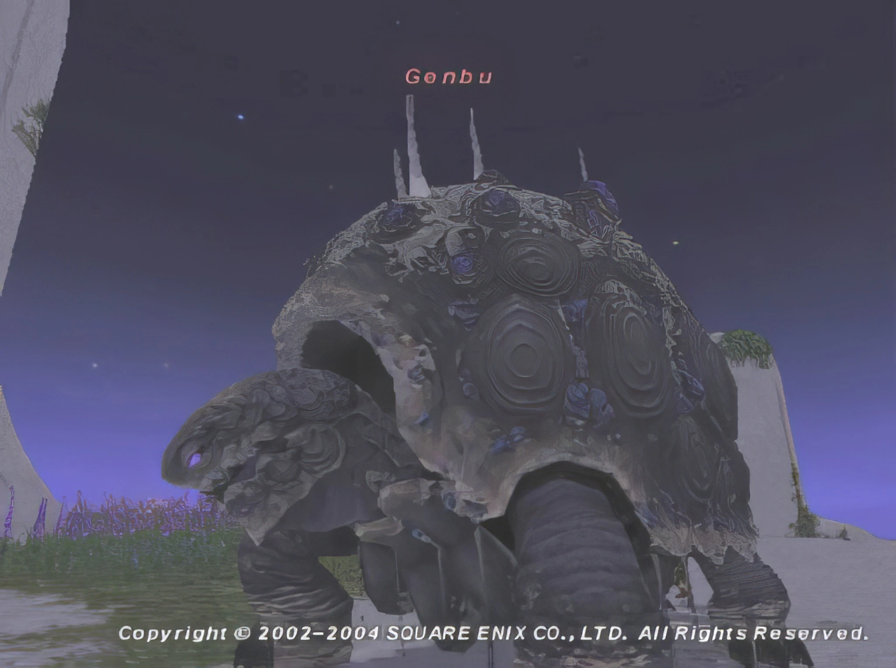
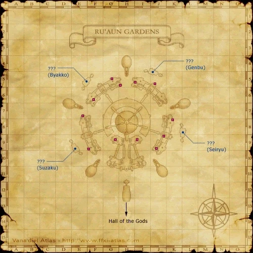

Level 75 reference · Zenith rules
|
Job: Paladin Notorious Monster |
 Image source |


|
Zone |
Level |
Drops |
Steal |
Spawns |
Notes | ||||||
|
88-90 |
1 |
A, T(S)
| |||||||||
|
?? |
1 |
A, T(S)
| ||||||||
|
HP = Detects Low HP; M = Detects Magic; Sc = Follows by Scent; T(S) = True-sight; T(H) = True-hearing JA = Detects job abilities; WS = Detects weaponskills; Z(D) = Asleep in Daytime; Z(N) = Asleep at Nighttime | |||||||||||
|
 Image sourceNotes A:
|
 Image source Image sourceNotes B:
|


Dialogue
Dialogue when appears
Genbu: "I am Genbu, Divine Guardian of the North. The brief spark of your existence is as a single heartbeat to me. Know your insignificance, mortal."
Dialogue when defeated
Genbu: "I would have never believed a mere mortal could sunder my shell... You amuse me. Perhaps we may meet again."
Video
See Video.
Adapted from Eden Wiki: Genbu · Contributors and history · CC BY-SA 4.0. Revision 1967. Layout, links and optional background text adapted for Zenith.